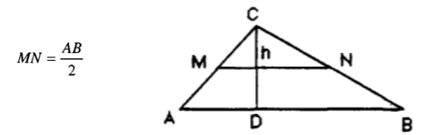

Unidad VI
6.2 Area
El área es la cantidad de espacio delimitada por una figura plana en dos dimensiones, las cuales son el largo y el ancho.
Para calcular el área de las diferentes figuras geométricas existen fórmulas establecidas que simplemente hay que utilizar sustituyendo los valores que conozcamos de la figura. A continuación se muestran algunas de las figuras geométricas más importantes y su respectiva fórmula para el cálculo de su área.
Para determinar el área de un paralelogramo, de un triángulo o de un trapecio, bastará con aplicar la fórmula siguiente:
siendo M y N los puntos medios de los lados respectivos, MN la base media y “h” la medida de la altura correspondiente al lado AB. Por otro lado, es fácil de probar que en todo paralelogramo
que en cualquier triángulo
y que en un trapecio cualquiera
El trapecio se podría considerar como una generalización del paralelogramo (en el caso en que AD y BC fuesen paralelos) y del triángulo (cuando D y C coinciden).
La fórmula (1) vale también para un polígono regular sin más que sustituir la base media por el contorno medio y la altura por el apotema del polígono. Así, de la siguiente figura, se desprende que.
Siendo Cm igual a la medida del contorno medio (MNPQRS) y n igual a la medida de la apotema OG
Del mismo modo podríamos determinar el área de una corona circular multiplicando la medida de la circunferencia media por la medida de su anchura. De la siguiente figura se desprende.

siendo “d” la medida de la anchura de la corona y “Cm” la medida de la circunferencia media.
Si r2=0 y r1=d=r, la fórmula (3)se convertirá en la del área de un círculo; esto es
Area del circulo = Π r2
En un polígono que no sea regular, por carecer de apotema, no será de aplicación la fórmula (2), por lo que habrá que descomponerlo en figuras cuyas áreas sean conocidas.
Con lo anterior podemos encontrar las áreas de la mayoría de los polígonos regulares. Veamos algunos ejemplos.
Calcular el área del siguiente triángulo.
Tenemos la longitud de la base y la altura, sin embargo según la fórmula (1) necesitamos la longitud de la base media, y como ya hemos definido antes, para los triángulos la longitud de la base media es igual a la mitad de la longitud del segmento AB así que veamos que datos tenemos.
B = 6
h = 5
La fórmula para calcular el área es la siguiente
Pero la base media del triángulo es la siguiente.
Sustituyendo los datos que tenemos nos queda lo siguiente.
De la misma forma se pueden calcular las áreas de diferentes figuras geométricas, solo hay que prestar atención a los datos que nos están dando y a la forma de obtener la Base media para la figura con la que estemos trabajando en ese momento.